Round 2 is retesting the same cases on the 27 Oct build; this page is the round 1 record you asked for.
Test: W3RetestTest#r2510TaskActionInvalidStatus
What happened: Rule with a Task action taskStatus "Task Closed" saved 201; a lead was created; the run is logged Fired with no error and 0 tasks exist.
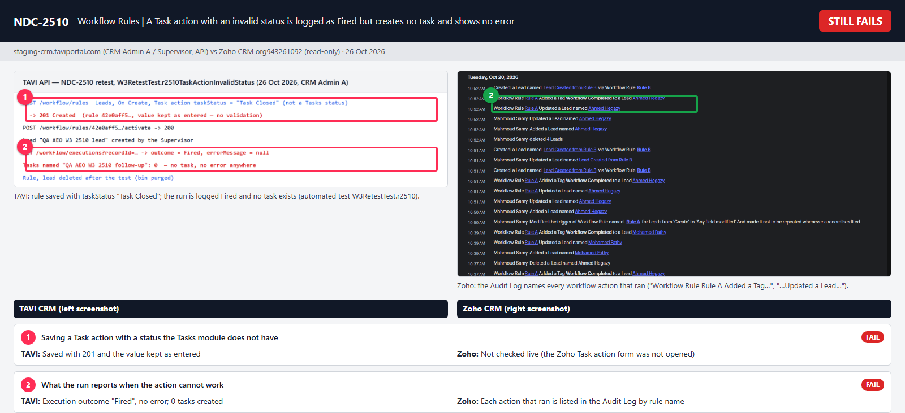
Test: W3RetestTest#r2511DateRuleRunIsAudited
What happened: The Tasks date rule (due_date + 0) ran on time (reminder created); /audit/events has no entry naming the rule after the due time.
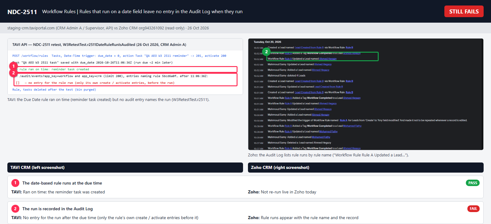
Test: GroupAJTest#dealsRuleApplied
What happened: rows created by the import: session=38593352-cfdb-4fd6-80e0-0172c5c3ba75 mapping=204 validate=200 {"success":true,"data":{"total":1,"valid":0,"error_rows":1,"issues":[{"row":2,"field":"pipeline","reason":"The value isn't a valid option from the list: 'Standard' is not one of the allowed picklist values.","value":"Standard","kind":"picklist"}],"aggregates":[{"field":"pipeline","field_label":"Pipeli …
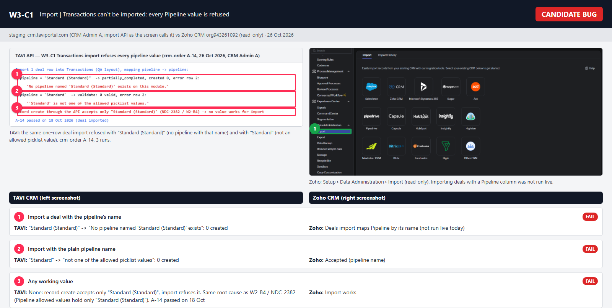
Test: GroupBReviewTest#importedLeadIsHeld
What happened: imported lead is held expected [true] but found [false]
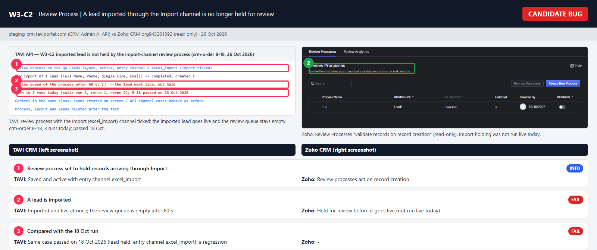
Test: GroupGChainTest#g07LeadsMassUpdate
What happened: workflow marker after review approval: owner=45ffbc5b-7859-4c21-be9e-7b5f30747ca2 review=approved description=null wfFired=0 approval=null governed=true expected [true] but found [false]
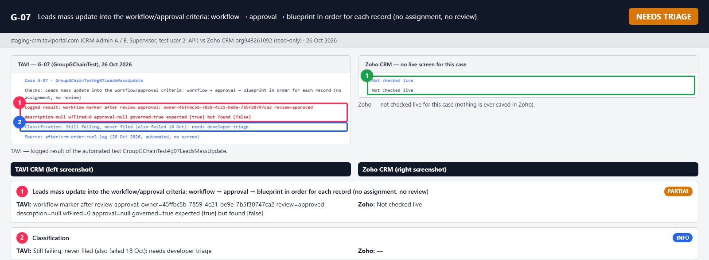
Test: GroupGChainTest#g10LeadsMadeByBlueprint
What happened: blueprint entered after the approval: owner=45ffbc5b-7859-4c21-be9e-7b5f30747ca2 review=null description=WF G-10 wfFired=1 approval=approved governed=false expected [true] but found [false]
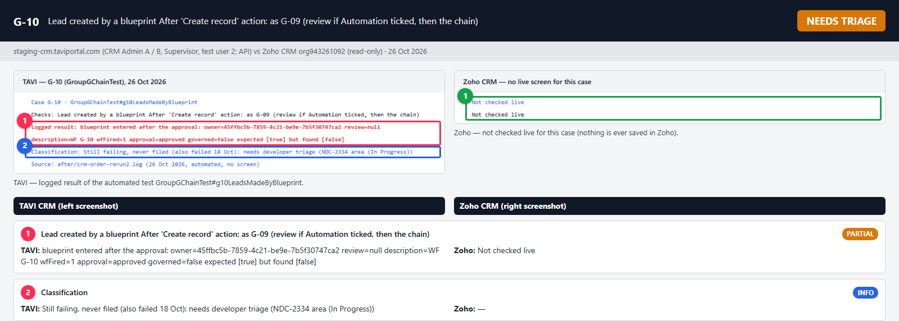
Test: GroupCWorkflowTest#eachActionTypeRuns
What happened: actions not all applied: [Create Record: no deal named QA AEO SC C-10 deal]. Runs: {rule=b97f8336-6e94-4520-99a3-aa114767b924 trig=RecordUpdated matched=true outcome=Fired err=null at=2026-10-26T11:18:01.723902+00:00} {rule=b97f8336-6e94-4520-99a3-aa114767b924 trig=RecordUpdated matched=true outcome=Fired err=null at=2026-10-26T11:17:59.553157+00:00} expected [true] but found [false]
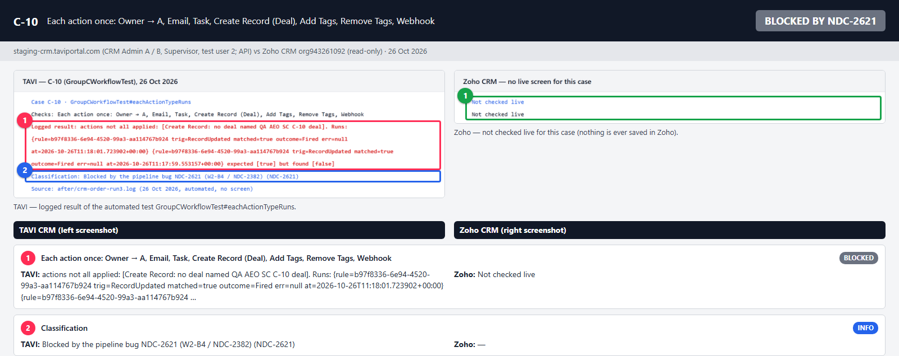
Test: GroupKZRegressionGapsTest#z2ImportManualApprovalHonoured
What happened: lead imported with manual_approval=true went live at once (record 7fee367e-97c0-4f04-972a-ed698d568608, import status completed); Zoho holds it in Approve Leads
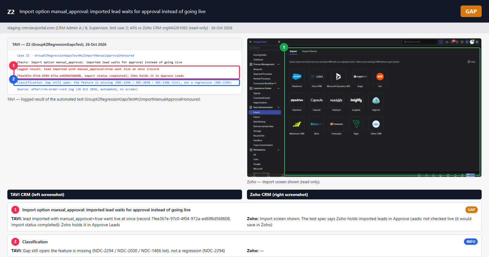
Test: GroupKZRegressionGapsTest#z3ScoreAndNotesTriggers
What happened: The following asserts failed: a Record Score trigger kind is accepted expected object to not be null, a Record Notes trigger kind is accepted expected object to not be null
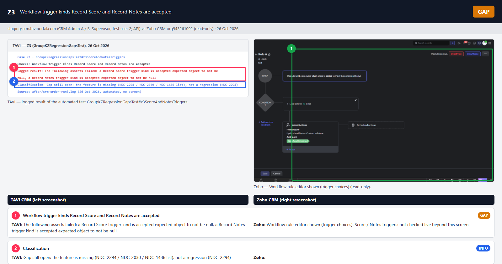
Test: GroupKZRegressionGapsTest#z4MeetingCallFunctionConnectedRecordActions
What happened: The following asserts failed: Meeting action accepted expected object to not be null, Call action accepted expected object to not be null, Function action accepted expected object to not be null, CreateConnectedRecord action accepted expected object to not be null
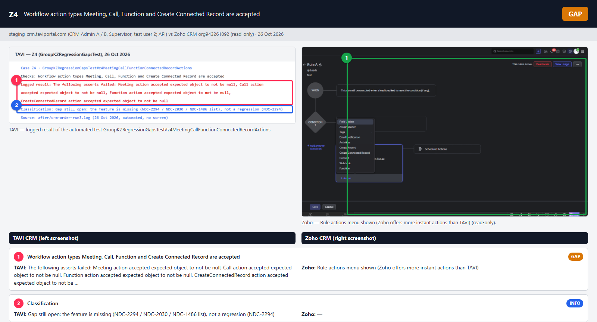
Test: GroupKZRegressionGapsTest#z5OwnerAssignmentByAssignmentRule
What happened: Owner Assignment with an assignment rule is accepted expected object to not be null
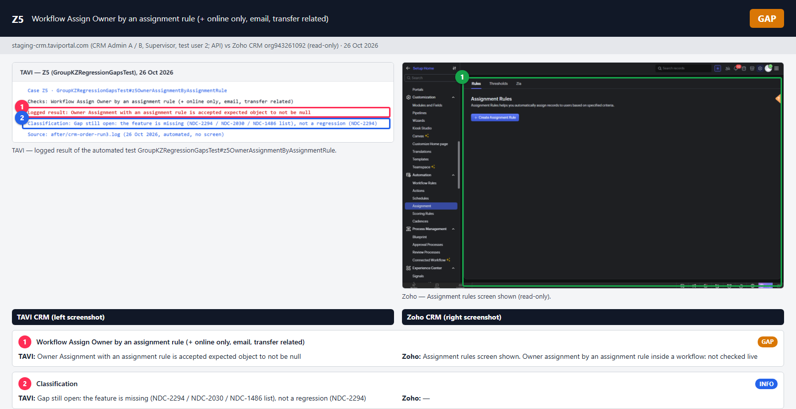
Test: GroupKZRegressionGapsTest#z6ReviewFunctionHooks
What happened: per-event review functions (onSubmission/onReview/onRejection/onResubmission) not supported: the valid body + 'functions' is refused 400 {"success":false,"data":null,"error":{"code":"VALIDATION_ERROR","message":"functions: The JSON property 'functions' could not be mapped to any .NET member contained in type 'Anyware.Workflow.Application.Dtos.ReviewProcesses.CreateReviewProcessRequest'.","details" …
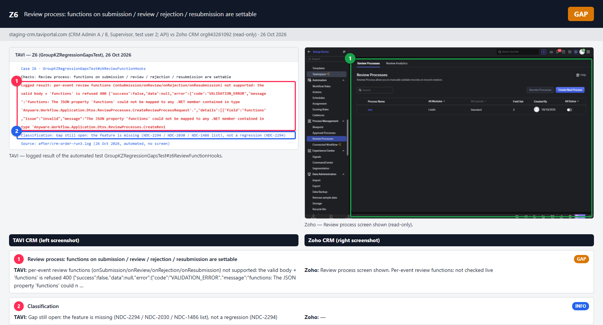
Test: GroupKZRegressionGapsTest#z7ApproverAnyoneEveryone
What happened: Everyone option stored on the level: {approver={kind=users, values=[d23fb4e0-248d-41f6-af60-d28885a7007e, 3445ec4a-020e-4f12-b156-dd2de7610164]}, waitingFieldAccess={mode=none, fields=[], resetFields=[]}, afterStageUpdateFields=null, assignTask=null, assignToSubmitterManager=false, distribution=broadcast, assigneeField=null, decisionFields=[]} expected [true] but found [false]
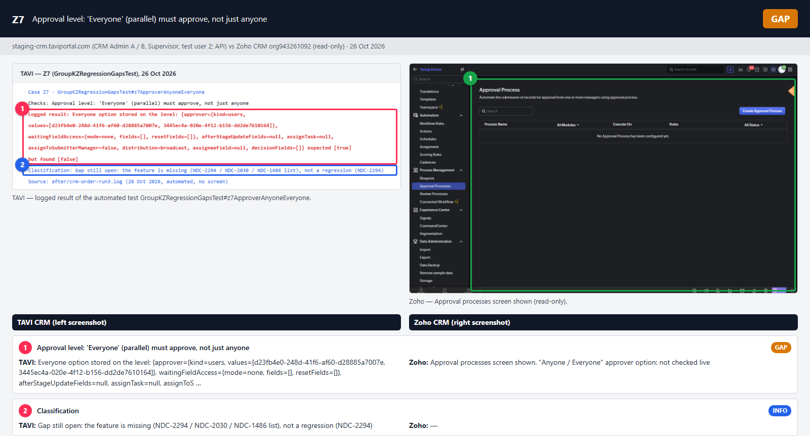
Test: GroupKZRegressionGapsTest#z8ApprovalCallFunctionRuns
What happened: approval final action Call Function accepted expected object to not be null
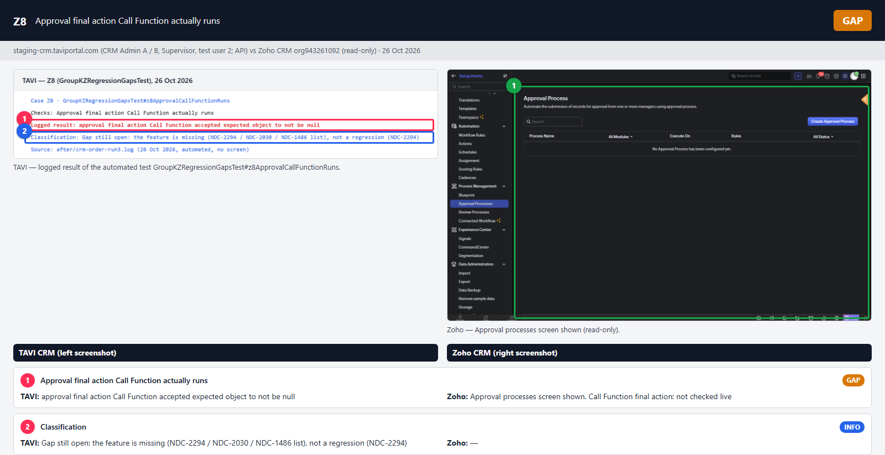
Test: GroupKZRegressionGapsTest#z9BlueprintAfterActions
What happened: The following asserts failed: Convert after-action accepted and stored expected object to not be null, Function after-action accepted and stored expected object to not be null, Tags after-action accepted and stored expected object to not be null, CreateRecord after-action accepted and stored expected object to not be null
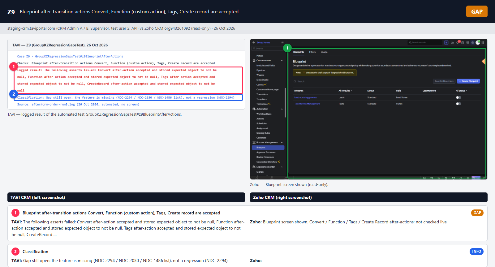
Test: W3RetestTest#gapProbes
What happened: gaps still open: [trigger RecordScoreChanged, trigger NoteAdded, action Meeting, action Call, action CustomFunction, action CreateConnectedRecord, route /workflow/schedules, route /workflow/scoring-rules, route /scoring-rules, route /workflow/cadences, route /workflow/macros, route /workflow/connected-flows] expected [true] but found [false]
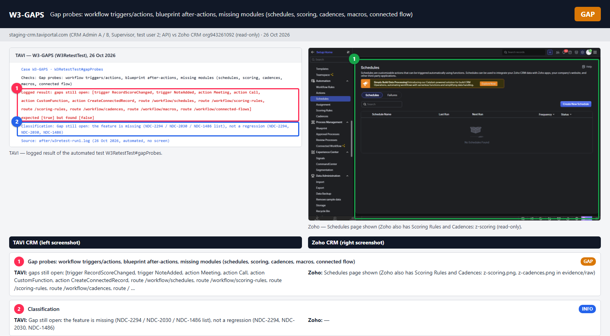
Test: W3RetestTest#g13ApiTriggerEmptyRunsNoWorkflow
What happened: The control lead got the rule, and a lead created with "trigger": [] also got it (description "QA W3 G13 ran") — an empty trigger list does not stop workflows.
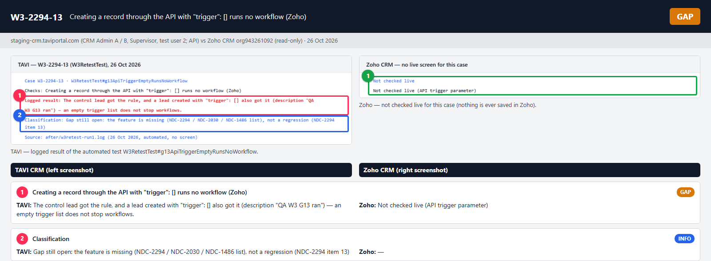
Test: GroupGChainTest#g04LeadsImportTriggerOff
What happened: import with 'trigger automation' off ran workflow/approval/blueprint: owner=45ffbc5b-7859-4c21-be9e-7b5f30747ca2 review=null description=null wfFired=0 approval=null governed=true expected [false] but found [true]
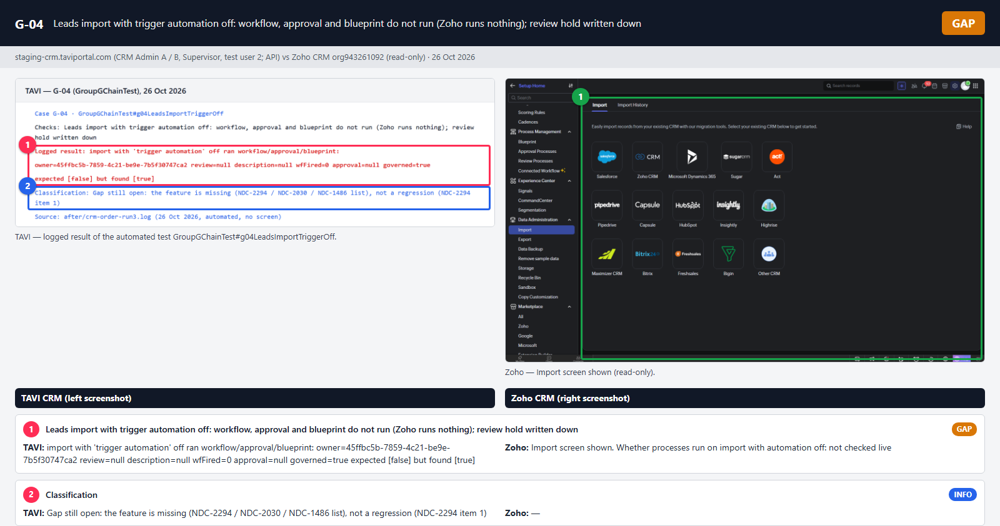
Test: GroupBReviewTest#apiChannel
What happened: API-channel process must hold an API-created lead (source=api), review status null expected [true] but found [false]
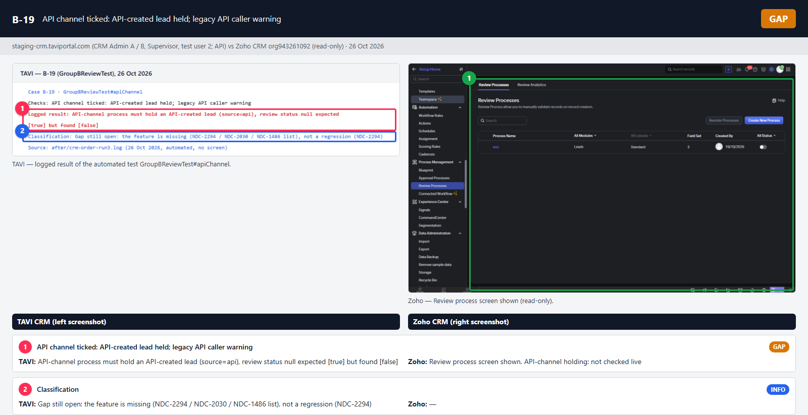
Test: GroupFHandoffTest#f01AssignmentBeforeReviewRecordOwnerReviewer
What happened: record-owner reviewer = assigned owner (adminB) 3445ec4a-020e-4f12-b156-dd2de7610164; reviewers [] expected [true] but found [false]
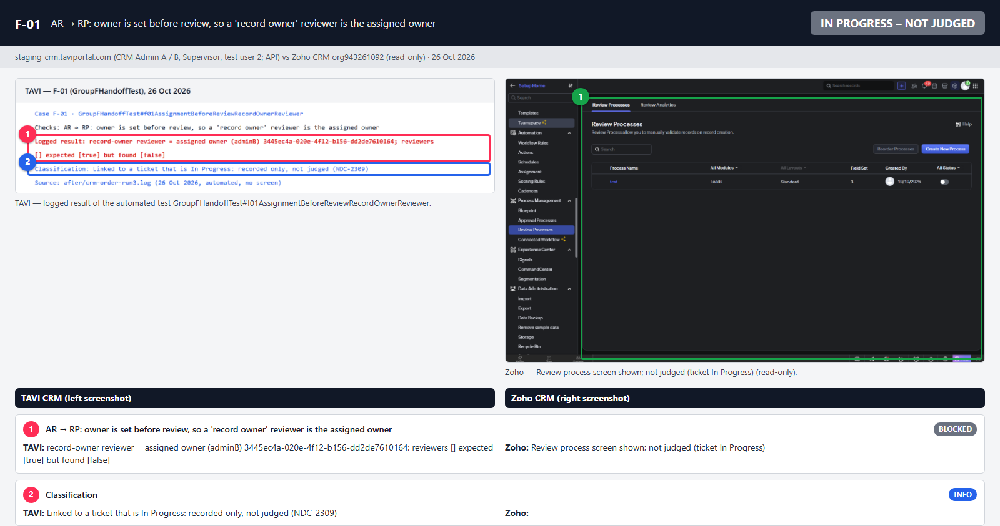
Test: GroupHIConversionTest#h05ScheduledActionsDroppedOnConvert
What happened: scheduled action still ran on the converted lead 188c12a3-bc8f-408b-bba7-158a38b98263 did not expect [WF H-05] but found [WF H-05]
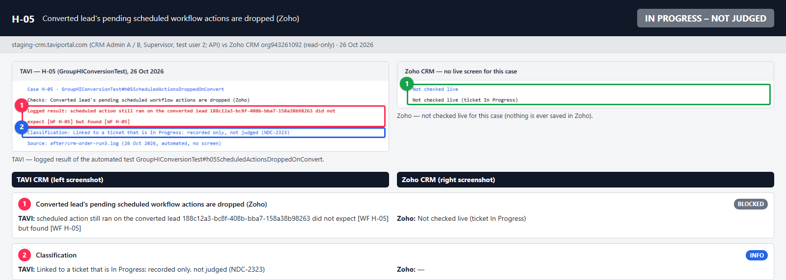
Test: GroupGChainTest#g16TimelineShowsOrder
What happened: Timeline lists every process (Zoho: the Timeline displays the order each process ran); missing [assignment, workflow, blueprint] in [NoteAdded:Approval: approved (final) by Mahmoud Samy, FieldChanged:null, NoteAdded:Approval: submitted for approval, NoteAdded:Review: approved by Mahmoud Mohamed, OwnerChanged:null, RecordCreated:null, NoteAdded:Review: submitted for review by mahmoud.mahamed1515] e …
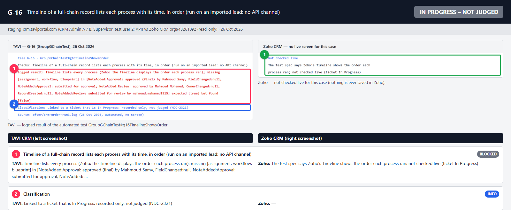
Test: GroupGChainTest#g12DealsApiCreate
What happened: create assignment rule returned 409: {"success":false,"data":null,"error":{"code":"CONFLICT","message":"An assignment rule named 'QA AEO SG G-12 AR' already exists in this module.","details":null},"meta":null}
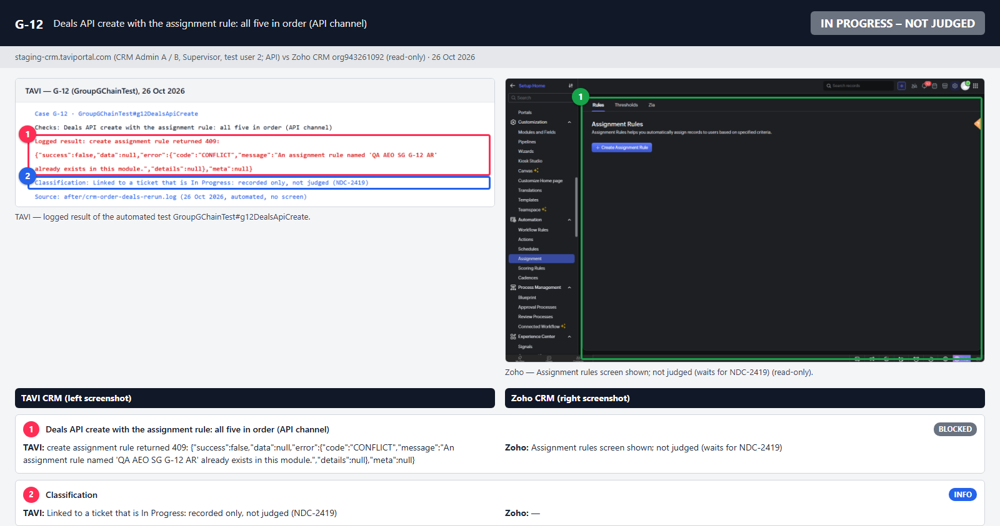
Test: GroupAJTest#allFiveProcessesOnTasks
What happened: create blueprint returned 422: {"success":false,"data":null,"error":{"code":"BLUEPRINT_DEFINITION_INVALID","message":"Blueprint definition validation failed.","details":[{"path":"targetField","type":"BLUEPRINT_DEFINITION_FIELD_INVALID","message":"Target field 'status' must be a pick_list to drive a blueprint."}]},"meta":null}
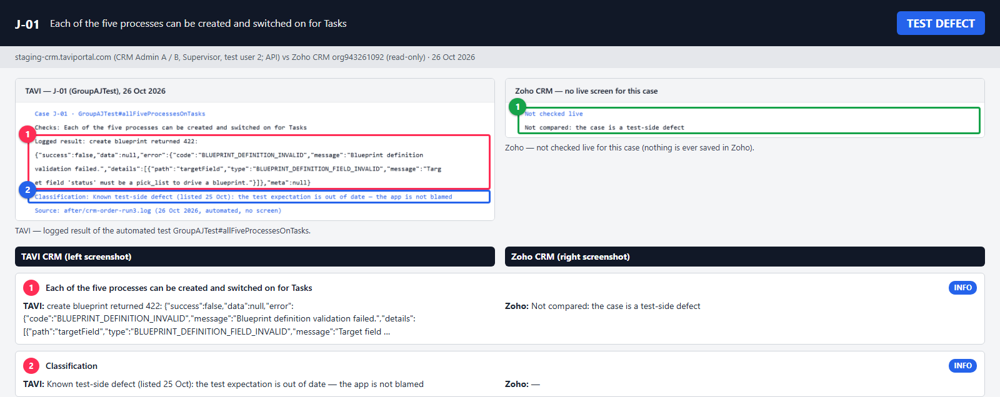
Test: GroupEBlueprintTest#e15TasksBlueprintOnStatus
What happened: Zoho allows a blueprint on Tasks Status; TAVI: {"success":false,"data":null,"error":{"code":"BLUEPRINT_DEFINITION_INVALID","message":"Blueprint definition validation failed.","details":[{"path":"targetField","type":"BLUEPRINT_DEFINITION_FIELD_INVALID","message":"Target field 'status' must be a pick_list to drive a blueprint."}]},"meta":null} expected [2] but found [4]
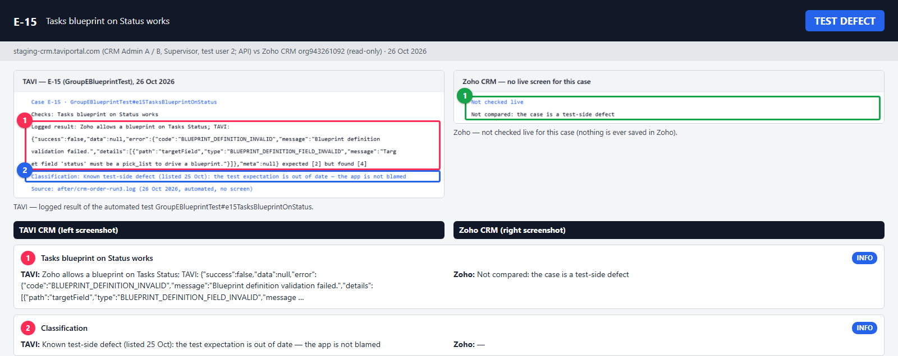
Test: GroupGChainTest#e2e5TaskApproval
What happened: blueprint entered after the approval: owner=45ffbc5b-7859-4c21-be9e-7b5f30747ca2 review=null description=null wfFired=- approval=approved governed=false expected [true] but found [false]
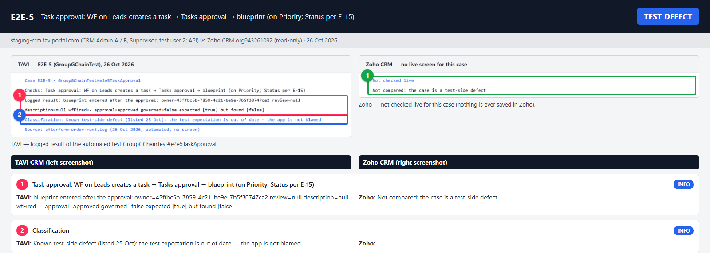
Test: GroupEBlueprintTest#e18TwoBlueprintsFirstWins
What happened: after /sort the new first blueprint should run did not expect [[QA AEO SE E-18 BP A]] but found [[QA AEO SE E-18 BP A]]
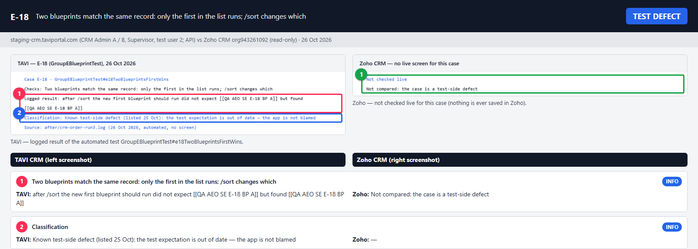
Test: GroupCWorkflowTest#scheduledActionCancelledWhenNoLongerMatching
What happened: scheduled Field Update still ran for the lead that stopped matching did not expect [WF C-11] but found [WF C-11]
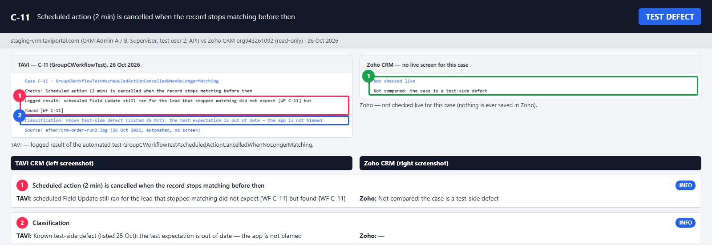
Test: GroupCWorkflowTest#criteriaFalseDoesNotFire
What happened: no execution row with outcome 'criteria not matched' for the rule (spec expects one). Runs: {rule=ab61d411-dc7f-4810-891c-295b6ba52ad0 trig=RecordCreated matched=true outcome=Fired err=null at=2026-10-26T11:12:08.018887+00:00} expected [true] but found [false]
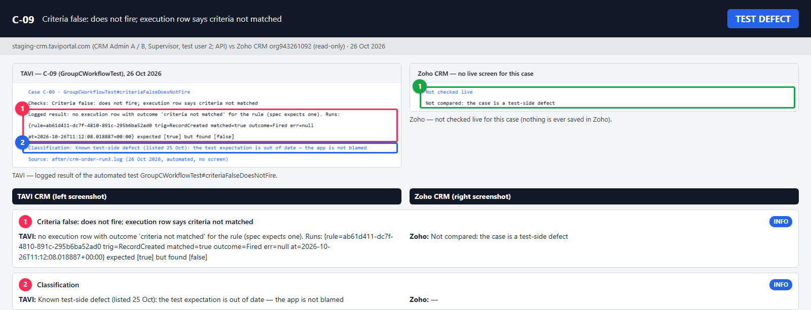
Test: GroupAJTest#fallbackLeaveUnassigned
What happened: record is not ownerless expected object to not be null
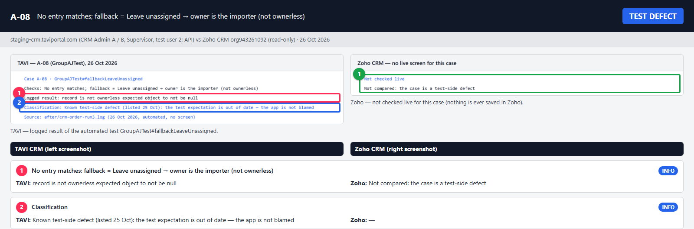
Test: GroupDApprovalTest#d17DeleteWithPending
What happened: process with pending records can be deleted, records unaffected (Zoho); TAVI: {"success":false,"data":null,"error":{"code":"CONFLICT","message":"This process still has 1 record(s) awaiting approval. Resolve them (approve, reject, or an admin takeover) before deleting it — deactivate it instead to stop new records entering.","details":null},"meta":null} expected [2] but found [4]
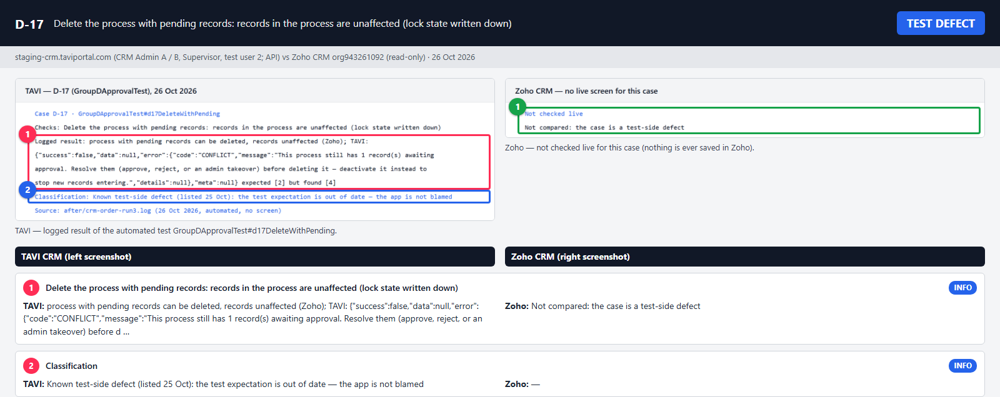
Test: GroupCWorkflowTest#fieldUpdateChainsToAnotherRule
What happened: rule A's field update did not trigger the On Edit rule B (Zoho: a field update can trigger other rules) expected [true] but found [false]
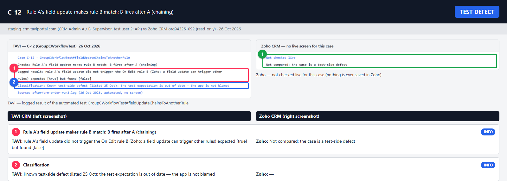
Test: GroupHIConversionTest#h04ConvertLeadInBlueprint
What happened: The following asserts failed: lead in a blueprint not convertible outside a Convert transition (userN): 200 {"success":true,"data":{"leadId":"d72b7812-1ccf-4694-b582-409c8069fcb7","targets":[{"moduleId":"b2398920-2914-4836-be53-81bd960effea","moduleKey":"accounts","outcome":"skipped","recordId":null,"matchedField":null,"reason":"skipped: gating field 'company' is not set on the lead"},{"moduleId": …
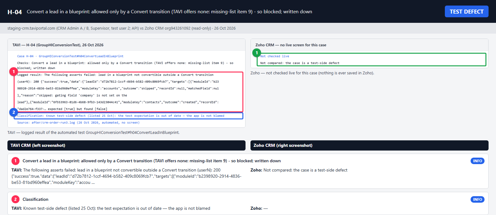
Test: GroupDApprovalTest#d05ResubmitWithNoMatchReleases
What happened: The following asserts failed: no longer rejected did not expect [rejected] but found [rejected]
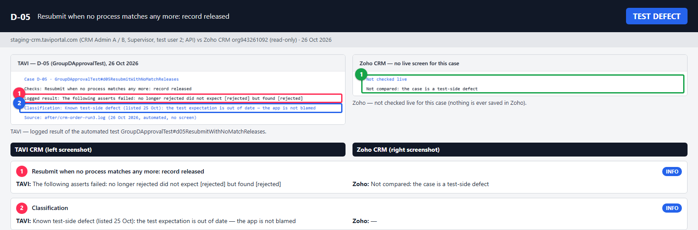
Test: GroupDApprovalTest#d06SubmitterCannotApproveOwnRecord
What happened: The following asserts failed: self approve blocked: 204 expected [true] but found [false], still pending expected [pending_approval] but found [approved], canApprove false expected [false] but found [true], UI: You can't approve a record you submitted expected [self_submitted] but found [null]
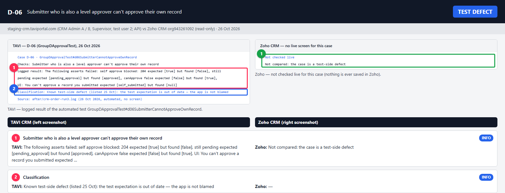
| Case | Reason group | What it checks | Logged reason |
|---|---|---|---|
| D-10 | Owner account reserved for the other lanes | 'Reset approval status if changed' field edited by a permitted user sends the record back for approval | NOT RUN: owner account reserved for another session (-Dcrm.noOwner) |
| D-18 | Owner account reserved for the other lanes | Approval Status not editable by a normal user; reset by a profile with 'Can Edit Record Approval Status' (Owner) | NOT RUN: owner account reserved for another session (-Dcrm.noOwner) |
| I-08 | Owner account reserved for the other lanes | Approval status reset (Owner) on an approved record in a blueprint: write down re-entry vs blueprint (F-20: no re-entry) | NOT RUN: owner account reserved for another session (-Dcrm.noOwner) |
| I-09 | Owner account reserved for the other lanes | Delete a record pending review, then restore it from the Recycle Bin: write down which holds come back | NOT RUN: owner account reserved for another session (-Dcrm.noOwner) |
| K-09 | Owner account reserved for the other lanes | Tenant Owner can change a record's Approval Status by hand (US-A3) | NOT RUN: owner account reserved for another session (-Dcrm.noOwner) |
| K-13 | Owner account reserved for the other lanes | US-D2: submission and approval are both written to the record Timeline | |
| A-10 | Needs your OK: would change a shared account | Availability Online status: signed-out user skipped | NOT RUN: needs a target user who is reliably signed out; userN/userV are signed in by parallel sessions and signing users out touches shared accounts |
| A-17 | Needs your OK: would change a shared account | Deactivated target user in the Category is skipped → fallback | NOT RUN – needs user OK: deactivating a user changes a shared account |
| J-04 | Would fire a teammate's rule | Workqueue task completion triggers the teammate rule, not QA rules | NOT RUN: needs Tasks status = Completed, which fires the teammate rule ActionsOnTaskCompletionFromWorkqueue |
| A-02 | Environment: public web form answers 404 | Extra: web-form submission (form owner = assignment rule) assigns the rule's user (WebForm channel) | INCONCLUSIVE: public web-form session not issued: 404 |
| E2E-1 | Environment: public web form answers 404 | Web lead happy path: web form → AR to userN → review approved → WF sets status + follow-up task → AP approved → BP to final state → convert → Deal chain | INCONCLUSIVE: public web-form session not issued: 404 |
| G-08 | Environment: public web form answers 404 | Leads web-form submission: assignment (form uses the rule) → review (web form channel) → workflow → approval → blueprint | INCONCLUSIVE: public web-form session not issued: 404 |
| G-02 | Environment: no API channel (API creates are "manual") | Leads API create with the assignment rule: all five in order (API channel) | INCONCLUSIVE: no API channel: a records-API create has source 'manual', so the assignment stage cannot run; review → workflow → approval → blueprint ran in order |
| G-15 | Environment: no API channel (API creates are "manual") | Tasks API create with the assignment rule: assignment → … (API channel) | INCONCLUSIVE: no API channel: a records-API create has source 'manual', so the assignment stage cannot run; the rest ran in order |
| A-13 | Environment: Leads has no unique field | Import in update mode with the rule does not change owners | INCONCLUSIVE: Leads has no unique field, so an update-mode import cannot match an existing lead |
| H-01 | Environment: deal conversion / mass convert | Convert a released lead (no holds) to a Deal while Deals has all five QA processes: write down which run (Zoho: AR does not run, owner = convert dialog) | INCONCLUSIVE: conversion created no Deal; it created: contacts=c1f1b548-d934-434f-bc89-039750f3a64f (created) subscriptions=69b63a9b-38ae-4fba-95e3-563c2fa0ef91 (created) | response 200 {"success":true,"data":{"leadId":"7bdd354a-f6a8-4da5-8f79-253b942a0e65","targets":[{"moduleId":"b2398920-2914-4836-be53-81bd960effea","moduleKey":"accounts","outcome":"skipped","recordId":null,"matchedField":null,"reason":"skipped: gating field 'company' is not set on the lead"},{"moduleId":"6f553963-01d6-4b68-9fb3-143d23044c41","moduleKey":"contacts","outcome":"created","recordId":"c1f1b548-d934-… |
| H-07 | Environment: deal conversion / mass convert | Mass convert: same as H-01 for each lead | INCONCLUSIVE: no mass-convert endpoint answered 2xx (/records/mass-convert -> 405; /records/bulk-convert -> 405; /records/convert -> 405; /mass-convert -> 404; ) - mass convert not reachable through the API |
| B-13 | Environment: SLA below 1 hour refused | SLA escalation 1 minute → adminB notified | INCONCLUSIVE: SLA below 1 hour is refused (400 SLA duration must be between 1 hour and 90 days); 60-min SLA stored, slaDueAt=2026-10-26T12:20:50.760081+00:00 — escalation not observable within the run |
| E-04 | Environment: no inbox to see the email | Transition with During fields filled moves the state and runs the After actions (field update, task, email, notification) | INCONCLUSIVE: state moved, field update and task ran; the After email is not visible in the Timeline (no inbox) - lead 11dd4bc2-934f-4b4f-b7bc-852b044852f5 |
| B-22 | Not applicable (your earlier decision) | Reorder two review processes: saved order is used | INCONCLUSIVE: reorder saved (p1 8→1, p2 9→0) but first-match-wins is not observable: only one process may cover a module+layout |
| E-16 | Other inconclusive | After-transition Task: Related To points at a record whose name resolves (names, not ids) | INCONCLUSIVE: runtime OK: task a2747917-6c98-491d-959e-be498a293a34 related_to=841043e1-c078-41f9-8d6e-dfd61bee45c3:860a5799-4b19-42bf-8597-e04f55382191 resolves to 'QA AEO SE E-16x anchor'; the designer's Contact Name / Related To label (NDC-1328) is UI-only and browser sign-in is not allowed in this run |
| F-04 | Other inconclusive | AR → BP: transition open to the record owner can be run by the assigned owner | INCONCLUSIVE: import reported success but the imported record 'QA AEO SF F-04 imp' could not be found in the list |
| G-13 | Other inconclusive | Deals import with the rule, trigger automation on: all five in order | INCONCLUSIVE: import created nothing: { "success": true, "data": { "session_id": "8bbb277e-0dd5-4476-90b1-bc00e2962363", "module_id": "f42cbafd-ab4e-4a6b-a40c-02c1d0ecb430", "file_name": "qa-aeo-sg.csv", "status": "partially_completed", "mode": "add", "total_rows": 1, "created_count": 0, "updated_count": 0, "skipped_count": 0, "error_count": 1, "errors": [ { "row": 2, "field": "pipeline", "reason": "The value isn't a valid option from the l |
| Z1 | Other inconclusive | Import with Trigger automation also starts approval, then blueprint (Deals) | INCONCLUSIVE: imported deal not found: {"success":true,"data":{"session_id":"f4535a03-be1a-444a-b6a9-7b120920beac","module_id":"f42cbafd-ab4e-4a6b-a40c-02c1d0ecb430","file_name":"qa-aeo-sk.csv","status":"partially_completed","mode":"add","total_rows":1,"created_count":0,"updated_count":0,"skipped_count":0,"error_count":1,"errors":[{"row":2,"field":"pipeline","reason":"The value isn't a valid option from the list: '84fc94da-09b6-41bd-9f79-80bf02f976c6' is not one of the allowed picklist values.","value":null,"kind":"picklist"}],"failure_reason":null,"started_at":"2026-10-26T11:54:48.985559+00:0 |
| G-18 | Other inconclusive | API create with an empty trigger list: written down what is skipped (Zoho: [] skips workflow, approval, blueprint) | INCONCLUSIVE: TAVI accepts but ignores an empty 'trigger' list (no documented trigger parameter): workflow=true approval=true blueprint=false (Zoho: [] skips all three); source api |
| K-09 (layout) | Other inconclusive | Approval Status field is a locked system field in the layout (read-only check, nothing changed) | INCONCLUSIVE: approval_status not found in the layout JSON - cannot tell whether it is hidden from the builder or named differently (UI check) |
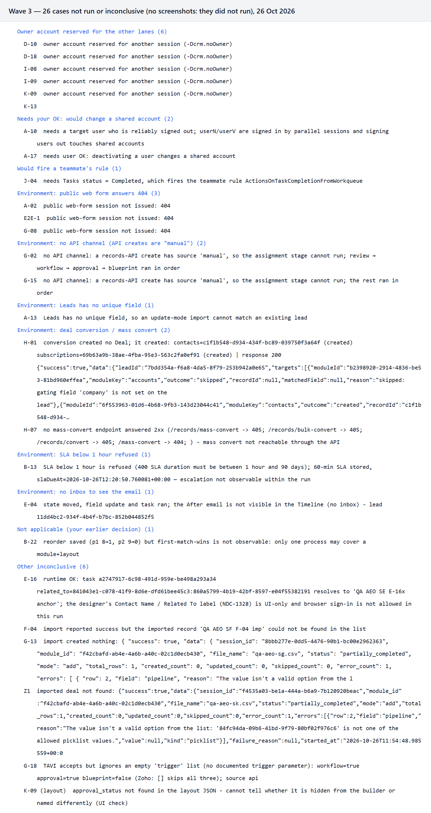